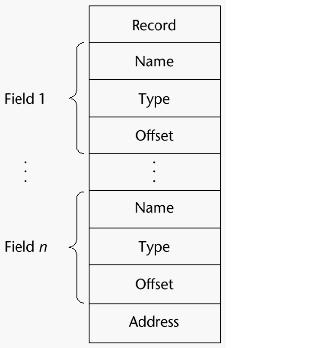
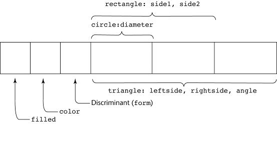
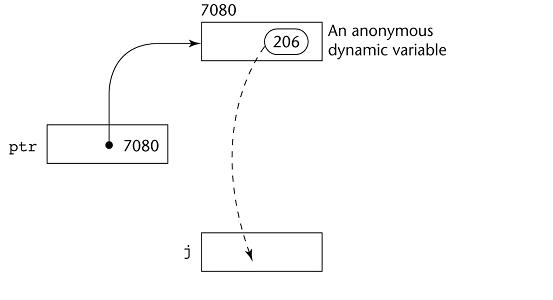

* RECORD TYPES A possibly heterogeneous aggregate of data elements individually identified by names (usually called fields) Design issues What is the syntactic form of references to the field? Are elliptical references allowed? e.g. ellipsis (...) any omitted part of speech that is understood Ex: structs in C COBOL ( level numbers show nested records ) 01 EMP-RECORD. 02 EMP-NAME. 03 FIRST PIC IS X(20). 03 MIDDLE PIC IS X(10). 03 LAST PIC IS X(20). 02 HOURLY-RATE PIC IS 99V99. Record Field Reference: MIDDLE OF EMP-NAME OF EMP-RECORD Fully qualified references include all record names Elliptical references allow leaving out some parts of record names as long as the reference is unambiguous; e.g. FIRST, FIRST OF EMP-NAME, and FIRST of EMP-RECORD are elliptical references to the employee's first name Ada Record structures are indicated in an orthogonal way: type Emp_Name_Type is record First: String (1..20); Mid: String (1..10); Last: String (1..20); end record; type Emp_Rec_Type is record Employ_Name: Emp_Name_Type; Hourly_Rate: Float; end record; Emp_Rec: Emp_Rec_Type; Record Field Reference: Emp_Rec.Name <== dot notation - most commonly used Operations on Records Assignment is very common if the types are identical Ada allows record comparison Ada records can be initialized with aggregate literals COBOL provides MOVE CORRESPONDING: Copies a field of source record to the corresponding field in target record Evaluation and Comparison to Arrays Straight forward and safe design Records are used when collection of data values is heterogeneous Access to array elements is slower than to record fields, because subscripts are dynamic (field names are static); e.g. myArray[i] Dynamic subscripts could be used with record field access, but would disallow type checking and be much slower Implementation of Record Type:  * UNION TYPES This variables can store different type values at different times during execution Design issues Should type checking be required? Should unions be embedded in records? Unions: o every member begins at offset 0 from the address of the union o the size is the size of the largest member o only one member value can be stored in a union object at a time Discriminated vs. Free Unions Fortran, C, and C++ provide union constructs with no language support for type checking; the union in these languages is called free union; Ex. C Type checking of unions require that each union include a type indicator called a discriminant Discriminated Union Type Ex. Ada type Shape is (Circle, Triangle, Rectangle); type Colors is (Red, Green, Blue); type Figure (Form: Shape) is record Filled: Boolean; Color: Colors; case Form is when Circle => Diameter: Float; when Triangle => Leftside, Rightside: Integer; Angle: Float; when Rectangle => Side1, Side2: Integer; end case; end record; Illustrated:  Evaluation of Unions: Potentially unsafe construct if no type checking Java and C# do not support unions Reflective of growing concerns for safety in programming language
*Note: unions and structures are prevalent in C system programming (see semaphore example) C was developed to be a low-level system programming language C is still the most popular choice for low-level programming For applications programming, the power of C is also its downfall obfuscated C code contest * POINTER AND REFERENCE TYPES A pointer type variable holds a memory address or a special value, nil Provide the power of indirect addressing Provide a way to manage dynamic memory A pointer can access memory that is dynamically created (e.g. heap) Pointers add addressing flexibility and control dynamic storage management Design Issues of Pointers What are the scope of and lifetime of a pointer variable? What is the lifetime of a heap-dynamic variable? Are pointers restricted as to the type of value to which they can point? Are pointers used for dynamic storage management, indirect addressing, or both? Should the language support pointer types, reference types, or both? Pointer Operations Two fundamental operations: assignment and dereferencing Assignment is used to set a pointer variables value to some useful address Dereferencing yields the value stored at the location represented by the pointers value Dereferencing can be explicit or implicit C++ has explicit operation via *; e.g. j = *ptr sets j to the value located at ptr  Problems with Pointers Dangling pointer: A pointer points to de-allocated a heap-dynamic variable Dangling object: An allocated heap-dynamic variable has no pointer (memory leak) Cross-linked pointers: heap-dynamic variable with two pointers (sometimes desirable) Pointers in C/C++ powerful and dangerous; Ex. C Explicit dereferencing and address-of operators (void *) can point to any type and be type checked but not de-referenced (Ex. C) In C, pointers can point to pointers can point to pointers.... (C double pointers) Limited pointer arithmetic is supported in C/C++ float stuff[100]; float *p; p = stuff; *(p+5) is equivalent to stuff[5] and p[5] *(p+i) is equivalent to stuff[i] and p[i] p = p + stuff; <= not OK Pointers in Fortran 95 point to heap and non-heap variables that have the TARGET attribute assigned in the declaration; Implicit dereferencing C-style pointers in C# are available only in unsafe code: unsafe { int i = 10; int* px1 = &i; } Reference Types C++ includes a special kind of pointer type called a reference type that is used primarily for formal parameters; C++ reference type behaves strictly like an alias (see C++ code ) In a reference, you never see the address and you have implicit assignment and dereferencing - (see C++ code) THERE IS NO EXPLICIT DEREFERENCING Advantages of both pass-by-reference and pass-by-value Java extends C++ reference variables to replace pointers entirely References refer to call instances C# includes both the references of Java and C pointers (in unsafe code) Evaluation of Pointers Dangling pointers and dangling objects are problems as is heap management Pointers or references are necessary for dynamic data structures--can't design a language without them Representations of Pointers Depends on register and address size Large computers use single values Intel microprocessors use segment and offset (2 16-bit addresses) Solutions to Dangling Pointer Problem o automatically de-allocate dynamic objects at the end of pointer's scope (Ada to some extent) Tombstone: extra heap cell that is a pointer to the heap-dynamic variable The actual pointer variable points only at tombstones (another indirection) When heap-dynamic variable de-allocated, tombstone remains but set to nil Costly in time and space -- not used in any major language Locks-and-keys: Pointer values are represented as (key, address) pairs Heap-dynamic variables are represented as variable plus cell for integer lock value When heap-dynamic variable allocated, lock value is created and placed in lock cell and key cell of pointer Allows multiple pointers to point to the same variable (key is copied also) When memory is deallocated, the key is modified to prevent other access Best solution: no explicit deallocation possible Heap Management A very complex run-time process Single-size cells vs. variable-size cells Two approaches to Garbage Collection (1) eager approach reclamation is gradual (C approach) Evaluation: less efficient but you have the maximum amount of memory at any given time (2) lazy approach reclamation occurs when the list of variable space becomes empty The run-time system allocates storage cells as requested and disconnects pointers from cells as necessary; garbage collection then begins Evaluation: more efficient but when you need it most, it works worst (takes most time when program needs most of cells in heap) * BIT TYPES (not covered in text) Systems programming often requires access to individual bits and data structures that take up less storage than primitive data types The use of pointers and bit-level operators can almost replace assembly code (Note: Only about 10 % of UNIX is assembly code - the rest is C) Example: C's bit fields and displaying bit by bit